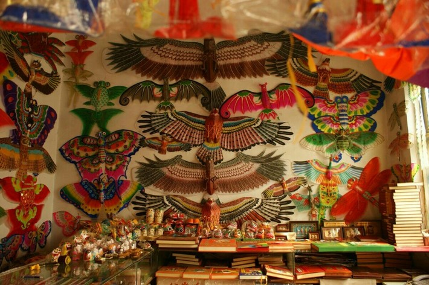
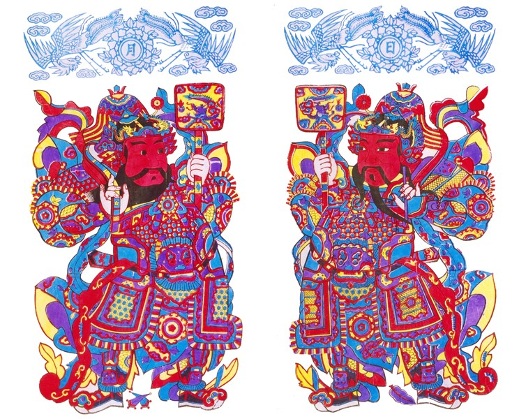
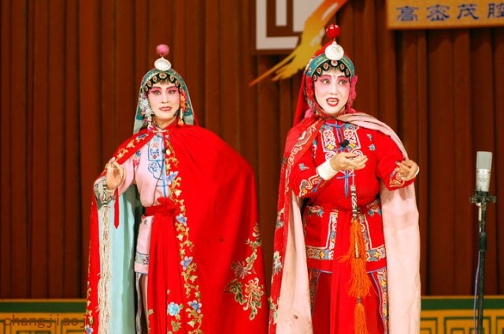
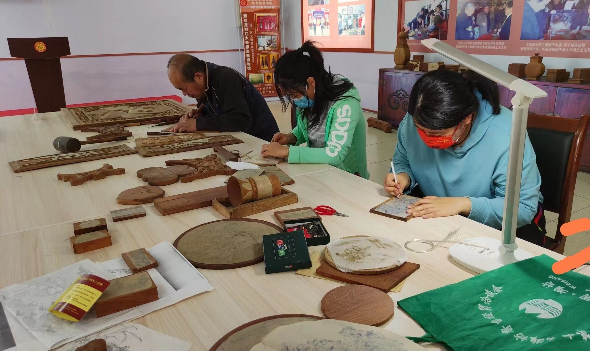

潍坊非物质文化遗产
潍坊历史悠久，文化底蕴深厚，拥有多项国家级非物质文化遗产。
潍坊风筝

潍坊是世界风筝之都，风筝制作技艺已有2000多年历史。潍坊风筝以造型优美、工艺精湛、色彩艳丽而闻名于世。
每年四月举办的潍坊国际风筝节，吸引着来自世界各地的风筝爱好者。
- 起源: 春秋战国时期
- 特点: 造型多样，工艺精湛
- 代表作品: 龙头蜈蚣风筝
- 地位: 国家级非物质文化遗产
杨家埠木版年画

杨家埠木版年画是中国三大年画之一，起源于明代，具有浓郁的乡土气息和民俗特色。
年画题材广泛，包括门神、吉祥图案、戏曲故事等，色彩鲜艳，构图饱满。
- 起源: 明朝
- 特点: 色彩艳丽，构图饱满
- 代表作品: 门神、连年有余
- 地位: 国家级非物质文化遗产
茂腔戏曲

茂腔是山东地方戏曲剧种之一，流行于潍坊及周边地区，已有300多年历史。
茂腔唱腔高亢激昂，表演朴实自然，具有浓郁的地方特色和生活气息。
- 起源: 清朝
- 特点: 唱腔高亢，表演朴实
- 代表剧目: 《墙头记》《姊妹易嫁》
- 地位: 国家级非物质文化遗产
传统手工艺

潍坊传统手工艺丰富多彩，包括核雕、剪纸、布老虎等，体现了民间艺人的智慧和创造力。
这些手工艺品既有实用价值，又有艺术价值，是潍坊文化的重要组成部分。
- 核雕: 以桃核、杏核为材料，雕刻精细
- 剪纸: 构图简洁，线条流畅
- 布老虎: 造型夸张，色彩鲜艳
- 地位: 多项被列为省级非物质文化遗产
潍坊传统文化活动
4月
潍坊国际风筝节
每年4月20日至25日举行，是世界规模最大的风筝盛会。
1月
杨家埠年画节
春节前后举办，展示传统年画制作工艺和现代创新作品。
9月
潍坊文化节
集中展示潍坊传统文化艺术，包括茂腔演出、手工艺展等。